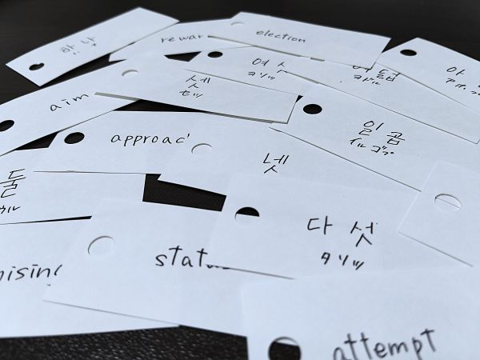
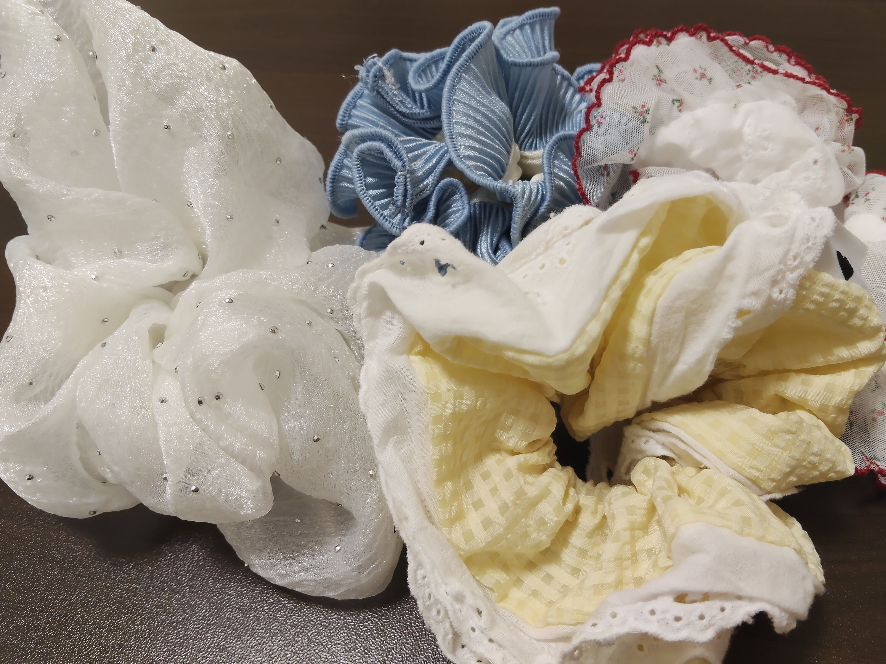

- トップ >
- 新しい趣味の部屋
新しい趣味の部屋
新しく挑戦し、趣味の幅を広げていこうというものです。
301号室(ネイルさん)

ネイルは自分には難しいと思っていたのですが、初心者でも簡単に始めることができました。100円ショップなどで簡単に手に入れることができるので、始めやすいです。
自分の爪がどんどんかわいくなっていく姿を見ながら、進めることができるので、テンションが上がります。あとはハードルが低いため、気軽に始められるのも魅力の一つだと思います。
302号室(語学さん)

最近語学に力を入れようと思い始めました。語学という勉強を趣味と言っていいのか曖昧なところはありますが、趣味に入れたいと思います。今特に力を入れているのは、韓国語と英語です。推しのアイドルが韓国の方なので、自分の力だけで聞き取れるようになれたらという想いで始めました。 最近はスマホアプリでも始めることができるので、楽しみながらできるのがいい点だなと思います。
303号室(シュシュさん)

最近新しくシュシュに興味を持つようになり、よく集めています。シュシュというのは、髪を止めるヘアゴムのようなものです。かわいいシュシュがたくさん売られており、お店で眺めるだけでも癒されます。 私が最近気に入っているシュシュは白色の生地にストーンが付いているシュシュです。集めるて自分でも身に付けられて一石二鳥ですね。皆さんもぜひ集めてみてください！